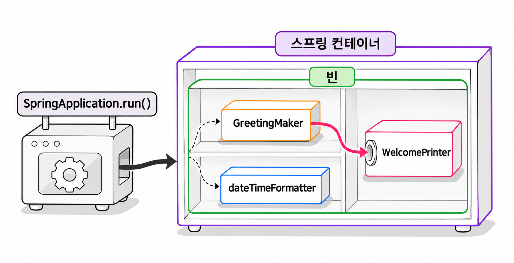
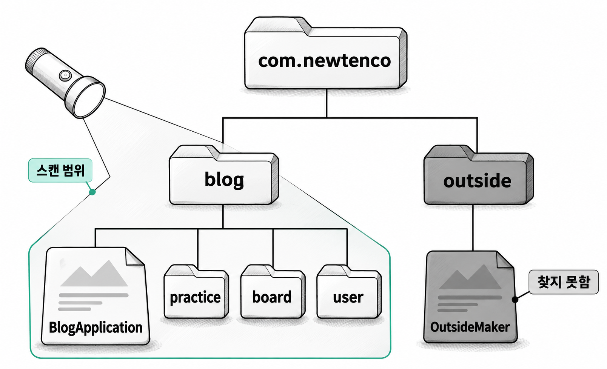
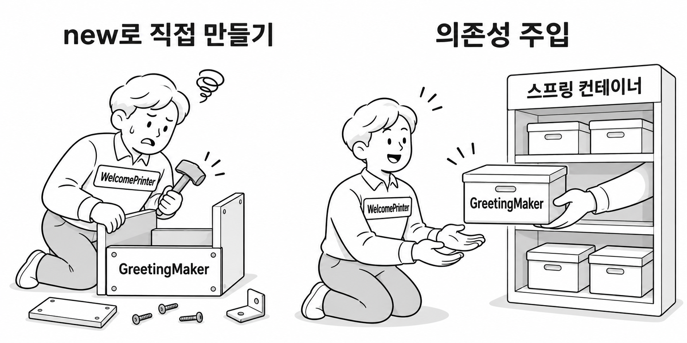

2장. 빈과 의존성 주입이란?
1. 빈과 스프링 컨테이너
1.1 객체를 new로 만들지 않는 이유
자바에서는 다른 클래스의 기능을 쓰려면 그 객체를 new로 만듭니다. 인사말을 만드는 GreetingMaker를 WelcomePrinter가 쓴다면 보통 다음처럼 씁니다.
코드 조각
public class WelcomePrinter {
private final GreetingMaker greetingMaker = new GreetingMaker();
}이렇게 쓰면 WelcomePrinter가 쓸 객체의 종류도, 그 객체를 만드는 방법도 직접 정합니다. 클래스가 몇 개뿐일 때는 문제가 없습니다. 그런데 서버 애플리케이션에는 이렇게 서로를 쓰는 클래스가 수십 개 있습니다. 그러면 세 가지 문제가 생깁니다.
첫째, GreetingMaker의 생성자가 바뀌면 new GreetingMaker()를 쓴 곳을 모두 찾아 고쳐야 합니다. 둘째, 클래스마다 new를 하므로 똑같은 객체가 쓰는 곳 수만큼 생깁니다. 데이터베이스 연결처럼 만들기 비싼 객체라면 낭비가 큽니다. 셋째, GreetingMaker 대신 다른 객체를 넣어 보려면 WelcomePrinter의 코드를 고쳐야 합니다.
스프링은 객체를 만드는 일을 쓰는 쪽에서 떼어 냅니다. 객체는 스프링이 한곳에서 만들고, 쓰는 쪽은 "이 타입의 객체가 필요하다"고 밝히기만 합니다.
1.2 빈과 스프링 컨테이너
빈(bean)은 스프링이 만들고 관리하는 객체입니다. 빈을 만들어 보관하고 필요한 곳에 넘겨주는 주체가 스프링 컨테이너(container)입니다. 스프링 코드에서 이 컨테이너는 ApplicationContext라는 이름으로 나옵니다. 1장에서 본 SpringApplication.run()이 서버를 띄울 때 가장 먼저 만드는 것이 이 컨테이너입니다.
컨테이너는 서버가 뜰 때 빈으로 등록된 클래스의 객체를 만들어 둡니다. 기본으로는 빈 하나당 객체를 하나만 만들고, 그 객체를 필요한 모든 곳에 같이 넘깁니다. 이렇게 객체 하나를 함께 쓰는 방식을 싱글톤(singleton)이라고 합니다. 그래서 같은 객체가 여러 개 생기는 1.1의 문제가 사라집니다.

2. 빈 등록하기
2.1 @Component와 컴포넌트 스캔
클래스 위에 @Component를 붙이면 그 클래스는 빈 후보가 됩니다. 서버가 뜰 때 스프링은 패키지를 뒤져 @Component가 붙은 클래스를 찾고, 찾은 클래스의 객체를 만들어 컨테이너에 넣습니다. 이 과정을 컴포넌트 스캔(component scan)이라고 합니다.
기본 문법
@Component
public class 클래스명 {
}이 장의 실습 클래스는 com.newtenco.blog.practice 패키지에 만듭니다. 빈이 언제 만들어지는지 눈으로 보도록 생성자에 출력 문장을 넣습니다.
예제 2-1 — @Component로 빈 등록하기
이어서: 예제 1-1
파일명: src/main/java/com/newtenco/blog/practice/GreetingMaker.java
package com.newtenco.blog.practice;
import org.springframework.stereotype.Component;
@Component
public class GreetingMaker {
public GreetingMaker() {
System.out.println("GreetingMaker 빈 생성");
}
public String make(String name) {
return "안녕하세요, " + name + "님";
}
}실행 결과
server-spring 폴더에서 .\gradlew.bat bootRun으로 서버를 띄우면 Tomcat 로그 사이에 다음 줄이 나타납니다.
Tomcat initialized with port 8080 (http)
GreetingMaker 빈 생성
Tomcat started on port 8080 (http) with context path '/'
Started BlogApplication in 2.2 seconds (process running for 2.6)main() 어디에도 new GreetingMaker()가 없는데 생성자가 실행되었습니다. 컴포넌트 스캔이 클래스를 찾아 스프링이 직접 객체를 만들었기 때문입니다. 출력이 한 번만 나온 것은 1.2의 싱글톤 방식대로 객체를 하나만 만들었다는 뜻입니다. @Component를 지우고 다시 실행하면 이 줄은 나오지 않습니다.
컨테이너는 빈마다 이름을 붙입니다. @Component로 등록한 빈의 이름은 클래스 이름의 첫 글자를 소문자로 바꾼 것이라, 이 빈의 이름은 greetingMaker입니다.
6장에서 쓸 @Controller · @Service · @Repository도 안쪽에 @Component를 품고 있습니다. 그래서 컴포넌트 스캔이 똑같이 찾아냅니다. 이름을 달리 둔 것은 클래스가 어느 계층의 일을 맡는지 드러내기 위해서입니다.
2.2 메인 클래스 위치와 패키지 구조
컴포넌트 스캔은 프로젝트 전체를 뒤지지 않습니다. 1장에서 본 것처럼 @SpringBootApplication 안의 @ComponentScan은 메인 클래스가 있는 패키지와 그 하위 패키지만 찾습니다. 이 책의 메인 클래스 BlogApplication은 com.newtenco.blog에 있으므로 스캔 범위는 com.newtenco.blog와 그 아래 전체입니다.

그림 2-2의 outside 패키지처럼 메인 클래스 바깥에 둔 클래스는 @Component를 붙여도 빈이 되지 않습니다. 직접 확인해 봅니다.
예제 2-2 — 스캔 범위 밖에 클래스 두기
이어서: 예제 2-1
파일명: src/main/java/com/newtenco/outside/OutsideMaker.java
package com.newtenco.outside;
import org.springframework.stereotype.Component;
@Component
public class OutsideMaker {
public OutsideMaker() {
System.out.println("OutsideMaker 빈 생성");
}
}실행 결과
서버를 다시 띄우면 다음 줄만 보이고 OutsideMaker 빈 생성은 나오지 않습니다.
GreetingMaker 빈 생성컴파일은 잘 되었지만 스프링이 OutsideMaker를 찾지 못했습니다. 오류 메시지 없이 조용히 빠지므로 알아채기 어렵습니다. 나중에 이 클래스를 주입받으려 할 때에야 "빈을 찾을 수 없다"는 오류가 납니다. 확인을 마쳤으면 com.newtenco.outside 패키지를 통째로 지웁니다.
앞으로 만들 클래스는 모두 com.newtenco.blog 아래에 기능별 패키지로 나누어 둡니다. 글은 board, 회원은 user, 여러 기능이 함께 쓰는 설정은 core에 둡니다. 패키지를 나누는 기준은 6장에서 자세히 다룹니다.
2.3 @Configuration과 @Bean
@Component는 내가 작성한 클래스에만 붙일 수 있습니다. 자바 표준 라이브러리나 외부 라이브러리의 클래스는 소스를 고칠 수 없으므로 애너테이션을 붙이지 못합니다. 이럴 때는 설정 클래스에 객체를 만들어 돌려주는 메서드를 쓰고, 그 메서드에 @Bean을 붙입니다. 메서드가 돌려준 객체가 빈이 됩니다.
기본 문법
@Configuration
public class 설정클래스명 {
@Bean
public 반환타입 빈이름() {
return 객체;
}
}@Configuration은 이 클래스가 빈 설정을 담은 클래스라는 표시입니다. @Configuration도 안쪽에 @Component를 품고 있어서 설정 클래스 자체도 컴포넌트 스캔으로 찾아집니다. @Bean으로 만든 빈의 이름은 메서드 이름입니다.
자바 표준 라이브러리의 DateTimeFormatter를 날짜 형식 빈으로 등록해 봅니다.
예제 2-3 — @Bean으로 라이브러리 객체 등록하기
이어서: 예제 2-1
파일명: src/main/java/com/newtenco/blog/practice/PracticeConfig.java
package com.newtenco.blog.practice;
import org.springframework.context.annotation.Bean;
import org.springframework.context.annotation.Configuration;
import java.time.format.DateTimeFormatter;
@Configuration
public class PracticeConfig {
@Bean
public DateTimeFormatter dateTimeFormatter() {
System.out.println("dateTimeFormatter 빈 생성");
return DateTimeFormatter.ofPattern("yyyy-MM-dd HH:mm");
}
}실행 결과
GreetingMaker 빈 생성
dateTimeFormatter 빈 생성dateTimeFormatter()를 부른 코드가 없는데도 메서드가 실행되었습니다. 스프링이 @Bean 메서드를 찾아 직접 호출하고, 돌려받은 객체를 dateTimeFormatter라는 이름으로 컨테이너에 넣었기 때문입니다. 두 줄의 순서는 실행 환경에 따라 바뀔 수 있습니다.
두 방법을 고르는 기준은 다음과 같습니다.
| 방법 | 붙이는 곳 | 쓰는 때 | 이 책의 예 |
|---|---|---|---|
@Component | 클래스 | 내가 작성한 클래스 | Controller · Service · JwtUtil |
@Configuration + @Bean | 설정 클래스의 메서드 | 라이브러리 클래스, 만들 때 설정이 필요한 객체 | 비밀번호 암호화 객체 · 보안 설정 |
10장에서는 Spring Security가 주는 비밀번호 암호화 클래스를 @Bean으로 등록합니다. 1장에서 본 자동 설정도 Spring Boot 안에 들어 있는 @Bean 메서드들이 조건에 맞을 때 빈을 등록하는 방식입니다.
3. 의존성 주입
3.1 의존성 주입(DI)이란?
한 클래스가 일을 하려고 다른 클래스를 쓸 때, 쓰는 대상을 의존성(dependency)이라고 합니다. WelcomePrinter가 GreetingMaker로 인사말을 만든다면 GreetingMaker는 WelcomePrinter의 의존성입니다.
의존성 주입(Dependency Injection, DI)은 필요한 의존성을 그 클래스가 직접 만들지 않고 바깥에서 넣어 주는 방식입니다. 스프링에서는 컨테이너가 보관하던 빈을 넣어 줍니다. 쓰는 쪽은 "GreetingMaker 타입이 필요하다"고만 적습니다. 그러면 컨테이너가 타입이 맞는 빈을 찾아 넘깁니다.

그림 2-3의 오른쪽처럼 바뀌면 1.1의 문제가 풀립니다. 객체를 만드는 곳이 컨테이너 한 곳이므로, 만드는 방법이 바뀌어도 쓰는 쪽은 고치지 않아도 됩니다. 넣어 줄 객체를 바꾸는 일도 바깥에서 할 수 있습니다.
3.2 생성자 주입과 final 필드
스프링이 빈을 넣어 주는 방법은 여러 가지입니다. 이 책은 그 가운데 생성자 주입을 씁니다. 필요한 빈을 생성자의 매개변수로 받는 방식이고, Spring Boot 공식 문서도 이 방식을 권합니다.
기본 문법
@Component
public class 클래스명 {
private final 의존타입 필드명;
public 클래스명(의존타입 필드명) {
this.필드명 = 필드명;
}
}스프링은 빈을 만들 때 생성자의 매개변수 타입을 보고 같은 타입의 빈을 찾아 넣습니다. 생성자가 하나뿐이면 따로 표시할 것이 없습니다. 생성자가 둘 이상이면 스프링이 쓸 생성자에 @Autowired를 붙여야 하지만, 이 책의 클래스는 모두 생성자를 하나만 둡니다.
GreetingMaker와 dateTimeFormatter 두 빈을 주입받는 WelcomePrinter를 만듭니다. 이 클래스는 CommandLineRunner 인터페이스를 구현합니다. Spring Boot는 서버 준비가 모두 끝난 뒤 이 인터페이스를 구현한 빈의 run()을 한 번 호출합니다. 이 run()을 주입받은 빈을 실제로 써 보는 자리로 씁니다.
예제 2-4 — 생성자로 빈 주입받기
이어서: 예제 2-3
파일명: src/main/java/com/newtenco/blog/practice/WelcomePrinter.java
package com.newtenco.blog.practice;
import org.springframework.boot.CommandLineRunner;
import org.springframework.stereotype.Component;
import java.time.LocalDateTime;
import java.time.format.DateTimeFormatter;
@Component
public class WelcomePrinter implements CommandLineRunner {
private final GreetingMaker greetingMaker;
private final DateTimeFormatter dateTimeFormatter;
public WelcomePrinter(GreetingMaker greetingMaker, DateTimeFormatter dateTimeFormatter) {
this.greetingMaker = greetingMaker;
this.dateTimeFormatter = dateTimeFormatter;
}
@Override
public void run(String... args) {
String now = LocalDateTime.now().format(dateTimeFormatter);
System.out.println(greetingMaker.make("스프링") + " (" + now + ")");
}
}실행 결과
괄호 안의 날짜와 시각은 실행한 때에 따라 다릅니다.
GreetingMaker 빈 생성
dateTimeFormatter 빈 생성
Tomcat started on port 8080 (http) with context path '/'
Started BlogApplication in 2.3 seconds (process running for 2.7)
안녕하세요, 스프링님 (2026-11-21 10:30)WelcomePrinter 안에는 new가 한 번도 나오지 않지만 두 필드에 객체가 들어 있습니다. 스프링이 WelcomePrinter를 만들기 전에 매개변수 타입에 맞는 빈 두 개를 준비했고, 생성자를 호출하며 넘겼기 때문입니다. GreetingMaker 빈 생성이 이번에도 한 번만 나왔으므로, 컨테이너가 보관하던 객체 하나를 그대로 넘겼다는 것을 알 수 있습니다. 인사말은 Started BlogApplication 뒤에 나옵니다. run()이 서버 준비가 끝난 뒤에 불리기 때문입니다.
필드를 final로 둔 데도 이유가 있습니다. final 필드는 객체가 만들어진 뒤 다른 값으로 바꿀 수 없어서, 한 번 주입받은 빈이 실행 중에 바뀌지 않습니다. 생성자에서 값을 넣는 줄을 빠뜨리면 다음 컴파일 오류가 납니다. 주입이 빠진 채로 서버가 뜨는 일을 컴파일 단계에서 막아 주는 셈입니다.
error: variable greetingMaker might not have been initialized주입할 빈을 컨테이너에서 찾지 못하면 서버가 아예 뜨지 않습니다. 입문자가 가장 자주 만나는 오류이므로 일부러 만들어 봅니다.
예제 2-5 — 주입할 빈이 없을 때
이어서: 예제 2-4
파일명: src/main/java/com/newtenco/blog/practice/GreetingMaker.java
package com.newtenco.blog.practice;
public class GreetingMaker {
public GreetingMaker() {
System.out.println("GreetingMaker 빈 생성");
}
public String make(String name) {
return "안녕하세요, " + name + "님";
}
}실행 결과
서버가 뜨다가 멈추고 다음 메시지가 나옵니다.
***************************
APPLICATION FAILED TO START
***************************
Description:
Parameter 0 of constructor in com.newtenco.blog.practice.WelcomePrinter required a bean of type 'com.newtenco.blog.practice.GreetingMaker' that could not be found.
Action:
Consider defining a bean of type 'com.newtenco.blog.practice.GreetingMaker' in your configuration.Description은 WelcomePrinter 생성자의 0번째 매개변수에 넣을 GreetingMaker 타입 빈을 찾지 못했다는 뜻입니다. Action은 그 타입의 빈을 등록하라고 알려 줍니다. 이 오류가 나면 해당 클래스에 @Component가 붙어 있는지, 2.2의 스캔 범위 밖에 있지 않은지를 먼저 확인합니다. 확인을 마쳤으면 GreetingMaker를 예제 2-1의 코드로 되돌립니다.
3.3 @RequiredArgsConstructor
주입할 빈이 늘 때마다 필드와 생성자를 함께 고치기는 번거롭습니다. Lombok의 @RequiredArgsConstructor는 final 필드를 모두 매개변수로 받는 생성자를 컴파일할 때 대신 만들어 줍니다.
예제 2-6 — @RequiredArgsConstructor로 생성자 줄이기
이어서: 예제 2-4
파일명: src/main/java/com/newtenco/blog/practice/WelcomePrinter.java
package com.newtenco.blog.practice;
import lombok.RequiredArgsConstructor;
import org.springframework.boot.CommandLineRunner;
import org.springframework.stereotype.Component;
import java.time.LocalDateTime;
import java.time.format.DateTimeFormatter;
@RequiredArgsConstructor
@Component
public class WelcomePrinter implements CommandLineRunner {
private final GreetingMaker greetingMaker;
private final DateTimeFormatter dateTimeFormatter;
@Override
public void run(String... args) {
String now = LocalDateTime.now().format(dateTimeFormatter);
System.out.println(greetingMaker.make("스프링") + " (" + now + ")");
}
}실행 결과
출력은 예제 2-4와 같습니다.
GreetingMaker 빈 생성
dateTimeFormatter 빈 생성
Started BlogApplication in 2.3 seconds (process running for 2.7)
안녕하세요, 스프링님 (2026-11-21 10:30)생성자를 지웠는데도 주입이 그대로 됩니다. 컴파일된 클래스에는 Lombok이 만든 생성자 WelcomePrinter(GreetingMaker, DateTimeFormatter)가 들어 있어서, 예제 2-4와 컴파일 결과가 같기 때문입니다. 생성자가 하나뿐이니 스프링은 이 생성자로 빈을 넣습니다. 이 책의 Service와 Controller는 모두 final 필드와 @RequiredArgsConstructor로 주입받습니다.
4. 설정값 주입
4.1 application.properties에 내 설정 키 만들기
application.properties에는 server.port처럼 Spring Boot가 정한 설정만 적는 것이 아닙니다. 프로젝트에서 쓸 값도 키=값 형태로 직접 만들어 적을 수 있습니다. 이 책은 직접 만든 키의 이름을 app.으로 시작해, 스프링이 정한 설정과 한눈에 구별되게 합니다.
기본 문법
app.기능.항목=값값을 코드에 바로 쓰지 않고 설정 파일로 빼 두면, 값이 바뀌어도 자바 코드는 그대로 두고 설정 파일만 고치면 됩니다. 12장의 JWT 비밀키 · 만료 시간과 21장의 CORS 허용 주소가 모두 이렇게 설정 파일에 들어갑니다. 21장과 22장에서는 같은 키에 실행 환경마다 다른 값을 넣습니다.
4.2 @Value로 설정값 받기
설정 파일의 값은 @Value로 받습니다. @Value("${키}")라고 쓰면 스프링이 그 키의 값을 찾아 넣습니다. 값은 매개변수나 필드의 타입에 맞게 바뀌어 들어가므로, 숫자로 받을 값은 int로 받으면 됩니다.
기본 문법
public 클래스명(@Value("${키}") 타입 매개변수명) {
this.필드명 = 매개변수명;
}인사할 이름과 출력 횟수를 설정 파일로 빼 봅니다. 3.2와 같은 이유로 필드는 final로 두고 생성자로 받습니다.
예제 2-7 — 설정값을 생성자로 받기
이어서: 예제 2-6
파일명: src/main/resources/application.properties
server.port=8080
spring.servlet.encoding.charset=UTF-8
spring.servlet.encoding.force=true
app.welcome.name=Spring Boot
app.welcome.count=2파일명: src/main/java/com/newtenco/blog/practice/WelcomePrinter.java
package com.newtenco.blog.practice;
import org.springframework.beans.factory.annotation.Value;
import org.springframework.boot.CommandLineRunner;
import org.springframework.stereotype.Component;
import java.time.LocalDateTime;
import java.time.format.DateTimeFormatter;
@Component
public class WelcomePrinter implements CommandLineRunner {
private final GreetingMaker greetingMaker;
private final DateTimeFormatter dateTimeFormatter;
private final String name;
private final int count;
public WelcomePrinter(GreetingMaker greetingMaker,
DateTimeFormatter dateTimeFormatter,
@Value("${app.welcome.name}") String name,
@Value("${app.welcome.count}") int count) {
this.greetingMaker = greetingMaker;
this.dateTimeFormatter = dateTimeFormatter;
this.name = name;
this.count = count;
}
@Override
public void run(String... args) {
String now = LocalDateTime.now().format(dateTimeFormatter);
for (int i = 0; i < count; i++) {
System.out.println(greetingMaker.make(name) + " (" + now + ")");
}
}
}실행 결과
GreetingMaker 빈 생성
dateTimeFormatter 빈 생성
Started BlogApplication in 2.3 seconds (process running for 2.7)
안녕하세요, Spring Boot님 (2026-11-21 10:30)
안녕하세요, Spring Boot님 (2026-11-21 10:30)설정 파일의 app.welcome.name 값이 인사말에 들어갔습니다. 문자열 2였던 app.welcome.count는 int로 바뀌어 인사말이 두 번 출력되었습니다. 이제 이름이나 횟수를 바꿀 때는 application.properties만 고치고 서버를 다시 띄우면 됩니다.
이번에는 @RequiredArgsConstructor를 쓰지 않고 생성자를 직접 썼습니다. Lombok이 만드는 생성자에는 필드에 붙인 @Value가 옮겨 가지 않기 때문입니다. 그래서 final 필드로 설정값을 받는 클래스는 생성자를 직접 쓰고 매개변수에 @Value를 붙입니다. 12장의 JwtUtil도 비밀키와 만료 시간을 이렇게 받습니다. 생성자로 받아 두면 25장에서 스프링 없이 new로 객체를 만들 때 테스트용 값을 직접 넘길 수 있다는 장점도 있습니다.
final이 아닌 필드에 @Value를 바로 붙이는 방법도 있습니다. 21장의 보안 설정 클래스는 이 방법으로 설정값을 받습니다.
코드 조각
@Value("${app.welcome.name}")
private String name;키 이름을 잘못 적었거나 설정 파일에 키가 없으면 서버가 뜨지 않습니다. 이때 로그에는 Could not resolve placeholder 'app.welcome.name' in value "${app.welcome.name}"처럼 찾지 못한 키 이름이 나옵니다. 로그의 키 이름과 설정 파일의 키를 한 글자씩 맞춰 봅니다.
practice 패키지와 app.welcome.name · app.welcome.count 두 줄은 이 장에서만 씁니다. 3장으로 넘어가기 전에 com.newtenco.blog.practice 패키지를 지우고, application.properties는 예제 1-1의 세 줄로 되돌립니다.